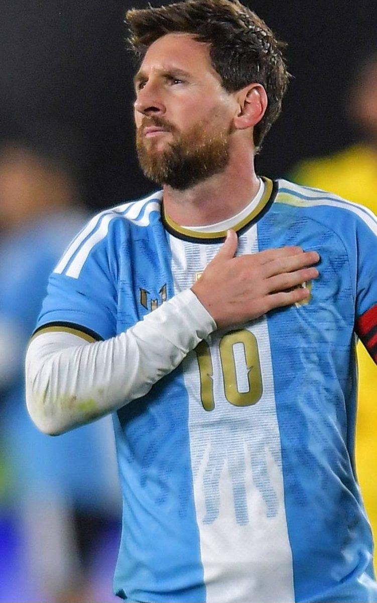
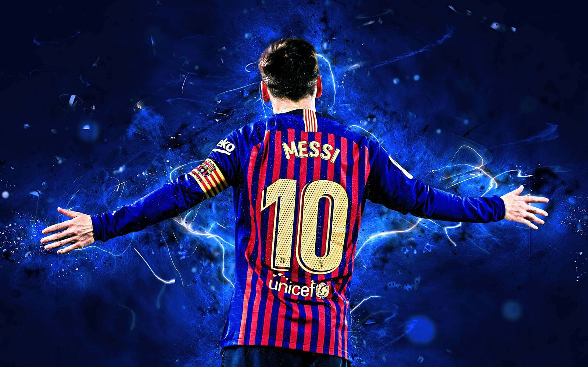
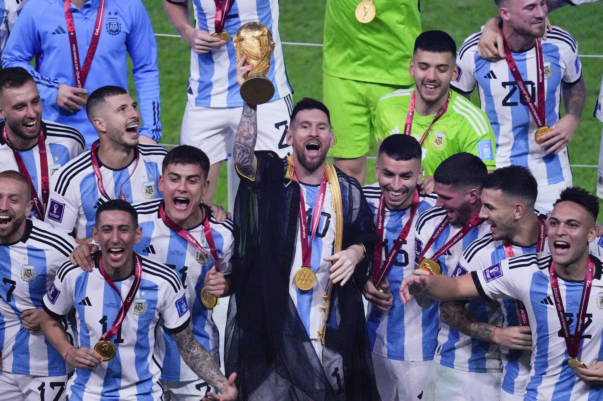

Lionel Messi — o 10 de Rosário, campeão do mundo
m10 · rosário → barcelona → miami
O menino de Rosário que virou o jogador mais premiado da história: oito Bolas de Ouro e a Copa do Mundo de 2022.


Saiu de Rosário aos 13 anos. Dali vieram oito Bolas de Ouro, quatro Champions e, em 2022, a Copa que faltava.
o jogo, de Rosário ao mundo01 — momentos
Momentos
Três retratos de uma carreira sem tamanho. A galeria completa tem mais.

copa do mundo · catar 2022
A taça que faltava
Sete gols, a Bola de Ouro do torneio e a taça erguida com o manto real — a última peça do quebra-cabeça.
02 — números
Em campo
Uma carreira medida em taças — e em recordes que não parecem reais.
0bolas de ouro
0copa do mundo
0copas américa
0champions league
0gols em 2012
0gols pelo barça
explore